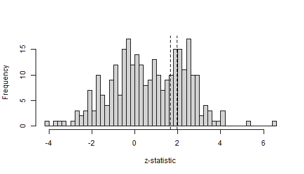

Comparison between metamixr and RoBMA
Maximilian Maier
Source:vignettes/compareRoBMA.Rmd
compareRoBMA.RmdThis vignette validates the random effects meta analysis and selection model implementation in metamixr against RoBMA. RoBMA priors are set to the metamixr defaults (normal(0, 1) on the mean and half-normal(0, 0.2) on the heterogeneity) so that the two packages estimate the same model. Also see Maier (2026) for a more in depth simulation study validating the mixture models. Reproducing this vignette requires RoBMA (version 4.0.0 or later) and JAGS in addition to package dependencies.
Random-effects meta-analysis
We simulate 300 studies with a true mean effect of 0 and heterogeneity 0.2. We can use the function from the package to specify a normal random effects meta-analysis by setting M = 1 and weights = c(1,1,1) (all studies equally likely to be published).
set.seed(42)
dat <- sim_mix(K = 300, M = 1, mu = 0, tau = 0.2, steps = c(0.95, 0.975),
weights = c(1, 1, 1), one_sided = TRUE)The random-effects model in metamixr can be fit using
re_mix() with a single component; in RoBMA it can be fitted
using brma().
fit_metamix <- re_mix(dat$y, dat$sds, M = 1, chains = 4, cores = 4, seed = 1, refresh = 0)
fit_RoBMA <- brma(yi = dat$y, sei = dat$sds, measure = "GEN",
prior_effect = prior("normal", list(0, 1)),
prior_heterogeneity = prior("normal", list(0, 0.2), list(0, Inf)),
chains = 4, sample = 1000, burnin = 1000, parallel = TRUE, seed = 1)
#> Compiling rjags model...
#> Starting 4 rjags simulations using a PSOCK cluster with 4 nodes on host
#> 'localhost'
#> Simulation complete
#> Finished running the simulationBoth implementations recover the data-generating values and agree closely.
print(fit_metamix, pars = c("mu", "tau"))
#> Inference for Stan model: random_effects_mix.
#> 4 chains, each with iter=2000; warmup=1000; thin=1;
#> post-warmup draws per chain=1000, total post-warmup draws=4000.
#>
#> mean se_mean sd 2.5% 25% 50% 75% 97.5% n_eff Rhat
#> mu[1] -0.04 0 0.01 -0.07 -0.05 -0.04 -0.03 -0.01 3397 1
#> tau[1] 0.18 0 0.02 0.15 0.17 0.18 0.19 0.21 3318 1
#>
#> Samples were drawn using NUTS(diag_e) at Tue Sep 22 12:35:32 2026.
#> For each parameter, n_eff is a crude measure of effective sample size,
#> and Rhat is the potential scale reduction factor on split chains (at
#> convergence, Rhat=1).
summary(fit_RoBMA)
#>
#> Bayesian Random-Effects Model (k = 300)
#>
#> Estimates
#> Mean SD 0.025 0.5 0.975 error(MCMC) error(MCMC)/SD ESS R-hat
#> mu -0.039 0.016 -0.071 -0.039 -0.008 0.00025 0.016 4000 1.000
#> tau 0.180 0.016 0.149 0.180 0.211 0.00031 0.020 2471 1.001One-sided selection
Next we simulate publication bias using sim_mix. Studies that are not significant in the expected direction (p > .05 in one-sided test) are published with probability 0.2, marginally significant studies (.025 < p < .05) with probability 0.5, and significant studies with probability 1.
set.seed(123)
dat_pb <- sim_mix(K = 300, M = 1, mu = 0, tau = 0.2, steps = c(0.95, 0.975),
weights = c(0.2, 0.5, 1), one_sided = TRUE)Let’s plot the distribution of z statistics to visually inspect the simulated publciation bias.
z <- dat_pb$y / dat_pb$sds
hist(z, breaks = 60, main = "", xlab = "z-statistic")
abline(v = qnorm(c(0.95, 0.975)), lty = 2)
The two packages state the same cutoffs differently. metamixr takes
cumulative probabilities of the standard normal distribution,
steps = c(0.95, 0.975), so that qnorm(steps)
are the cutoffs on the z-statistic. RoBMA takes the one-sided p-values,
steps = c(0.025, 0.05). To validate the metamixr
implementation we restrict RoBMA to fit only a single selection model
corresponding to the implementation of the selection model in
metamixr.
fit_metamix_pb <- sel_mix(dat_pb$y, dat_pb$sds, M = 1, steps = c(0.95, 0.975),
chains = 4, cores = 4, seed = 1, refresh = 0)
fit_RoBMA_pb <- bselmodel(yi = dat_pb$y, sei = dat_pb$sds, measure = "GEN",
prior_effect = prior("normal", list(0, 1)),
prior_heterogeneity = prior("normal", list(0, 0.2), list(0, Inf)),
prior_bias = prior_weightfunction(side = "one-sided",
steps = c(0.025, 0.05)),
effect_direction = "positive",
chains = 4, sample = 1000, burnin = 1000, parallel = TRUE, seed = 1)
#> Compiling rjags model...
#> Starting 4 rjags simulations using a PSOCK cluster with 4 nodes on host
#> 'localhost'
#> Simulation complete
#> Finished running the simulationAgain the estimates agree between the two approaches to fitting the same selection model.
print(fit_metamix_pb, pars = c("mu", "tau", "omega"))
#> Inference for Stan model: selection_mix.
#> 4 chains, each with iter=2000; warmup=1000; thin=1;
#> post-warmup draws per chain=1000, total post-warmup draws=4000.
#>
#> mean se_mean sd 2.5% 25% 50% 75% 97.5% n_eff Rhat
#> mu[1] 0.02 0 0.02 -0.03 0.00 0.02 0.03 0.06 2302 1
#> tau[1] 0.20 0 0.02 0.17 0.19 0.20 0.21 0.23 2174 1
#> omega[1] 0.29 0 0.07 0.18 0.24 0.29 0.34 0.46 2095 1
#> omega[2] 0.57 0 0.15 0.32 0.45 0.55 0.67 0.90 2040 1
#> omega[3] 1.00 0 0.00 1.00 1.00 1.00 1.00 1.00 134 1
#>
#> Samples were drawn using NUTS(diag_e) at Tue Sep 22 12:38:42 2026.
#> For each parameter, n_eff is a crude measure of effective sample size,
#> and Rhat is the potential scale reduction factor on split chains (at
#> convergence, Rhat=1).
summary(fit_RoBMA_pb)
#>
#> Bayesian Random-Effects Selection Model (k = 300)
#>
#> Estimates
#> Mean SD 0.025 0.5 0.975 error(MCMC) error(MCMC)/SD ESS R-hat
#> mu 0.017 0.024 -0.030 0.017 0.063 0.00096 0.040 729 1.013
#> tau 0.202 0.016 0.171 0.202 0.235 0.00046 0.029 1230 1.003
#>
#> Publication Bias
#> Mean SD 0.025 0.5 0.975 error(MCMC) error(MCMC)/SD ESS
#> omega[0,0.025] 1.000 0.000 1.000 1.000 1.000 NA NA NA
#> omega[0.025,0.05] 0.568 0.147 0.322 0.552 0.891 0.00578 0.039 644
#> omega[0.05,1] 0.293 0.073 0.174 0.284 0.463 0.00313 0.043 599
#> R-hat
#> omega[0,0.025] NA
#> omega[0.025,0.05] 1.010
#> omega[0.05,1] 1.011
#> P-value intervals for publication bias weights omega correspond to one-sided p-values.Two-sided selection
We next compare the two methods for two sided selection, where
significance in either direction increases the probability of
publication. In metamixr this is one_sided = FALSE; in
RoBMA it is side = "two-sided" in the weight function
prior.
set.seed(123)
dat_pb2 <- sim_mix(K = 300, M = 1, mu = 0, tau = 0.2, steps = c(0.95, 0.975),
weights = c(0.2, 0.5, 1), one_sided = FALSE)
fit_metamix_pb2 <- sel_mix(dat_pb2$y, dat_pb2$sds, M = 1, steps = c(0.95, 0.975),
one_sided = FALSE, chains = 4, cores = 4, seed = 1, refresh = 0)
fit_RoBMA_pb2 <- bselmodel(yi = dat_pb2$y, sei = dat_pb2$sds, measure = "GEN",
prior_effect = prior("normal", list(0, 1)),
prior_heterogeneity = prior("normal", list(0, 0.2), list(0, Inf)),
prior_bias = prior_weightfunction(side = "two-sided",
steps = c(0.025, 0.05)),
chains = 4, sample = 1000, burnin = 1000, parallel = TRUE, seed = 1)
#> Compiling rjags model...
#> Starting 4 rjags simulations using a PSOCK cluster with 4 nodes on host
#> 'localhost'
#> Simulation complete
#> Finished running the simulation
print(fit_metamix_pb2, pars = c("mu", "tau", "omega"))
#> Inference for Stan model: selection_mix.
#> 4 chains, each with iter=2000; warmup=1000; thin=1;
#> post-warmup draws per chain=1000, total post-warmup draws=4000.
#>
#> mean se_mean sd 2.5% 25% 50% 75% 97.5% n_eff Rhat
#> mu[1] 0.00 0 0.01 -0.03 -0.01 0.00 0.00 0.02 2464 1
#> tau[1] 0.23 0 0.02 0.20 0.22 0.23 0.24 0.26 2930 1
#> omega[1] 0.31 0 0.06 0.22 0.27 0.31 0.35 0.43 3086 1
#> omega[2] 0.50 0 0.11 0.31 0.42 0.49 0.57 0.75 2093 1
#> omega[3] 1.00 0 0.00 1.00 1.00 1.00 1.00 1.00 256 1
#>
#> Samples were drawn using NUTS(diag_e) at Tue Sep 22 12:44:07 2026.
#> For each parameter, n_eff is a crude measure of effective sample size,
#> and Rhat is the potential scale reduction factor on split chains (at
#> convergence, Rhat=1).
summary(fit_RoBMA_pb2)
#>
#> Bayesian Random-Effects Selection Model (k = 300)
#>
#> Estimates
#> Mean SD 0.025 0.5 0.975 error(MCMC) error(MCMC)/SD ESS R-hat
#> mu -0.004 0.014 -0.031 -0.004 0.023 0.00029 0.021 2245 1.002
#> tau 0.227 0.018 0.193 0.226 0.262 0.00060 0.034 874 1.001
#>
#> Publication Bias
#> Mean SD 0.025 0.5 0.975 error(MCMC) error(MCMC)/SD ESS
#> omega[0,0.025] 1.000 0.000 1.000 1.000 1.000 NA NA NA
#> omega[0.025,0.05] 0.871 0.095 0.651 0.891 0.995 0.00296 0.031 1022
#> omega[0.05,1] 0.315 0.057 0.217 0.310 0.440 0.00185 0.033 944
#> R-hat
#> omega[0,0.025] NA
#> omega[0.025,0.05] 1.008
#> omega[0.05,1] 1.002
#> P-value intervals for publication bias weights omega correspond to one-sided p-values.References
Bartoš, F., Maier, M., Wagenmakers, E.-J., Doucouliagos, H., & Stanley, T. D. (2023). Robust Bayesian meta-analysis: Model-averaging across complementary publication bias adjustment methods. Research Synthesis Methods, 14(1), 99–116. https://doi.org/10.1002/jrsm.1594
Maier, M. (2026). Addressing heterogeneity with Bayesian meta-analytic mixture modelling. PsyArXiv. https://doi.org/10.31234/osf.io/nkyqm_v2
Maier, M., Bartoš, F., & Wagenmakers, E.-J. (2023). Robust Bayesian meta-analysis: Addressing publication bias with model-averaging. Psychological Methods, 28(1), 107–122. https://doi.org/10.1037/met0000405